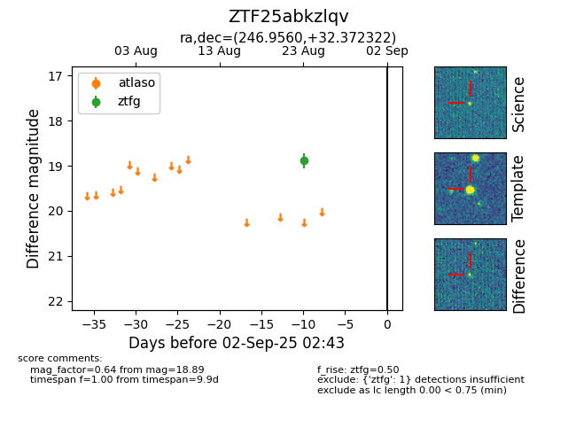

Target ZTF25abkzlqv at 2025-08-26 12:10, see:
FINK: fink-portal.org/ZTF25abkzlqv
Lasair: lasair-ztf.lsst.ac.uk/objects/ZTF25abkzlqv
ALeRCE: alerce.online/object/ZTF25abkzlqv
alt names
ZTF25abkzlqv (ztf,fink)
coordinates:
equatorial (ra, dec) = (246.9560,+32.37232)
galactic (l, b) = (53.0557,+43.23079)
photometry
last ztfg=18.89
1 ztfg detections
